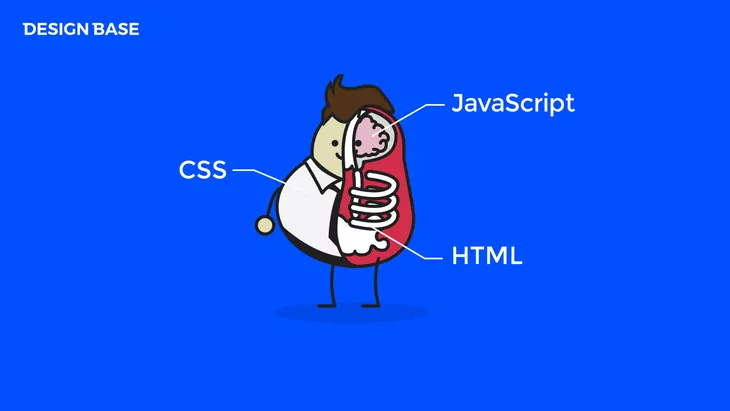

Project
토양 자동 급수 장치
Arduino의 토양 수분감지 센서를 이용하여 자동으로 식물에게 물을 줄 수 있는 IoT 토양 자동 급수 장치

Project Intention
기획 의도
반려 식물 시대 현대인의 외로움을 치유시켜 주는 식물, 이런 식물들을 책임지고 건강하게 키우려면
물 조절은 기본이다.
옥상 텃밭, 주말농장 도시농부들도 늘고 있는 추세 생산적인 여가활동과 개인의
지속적인 심신 안정, 농업을 돕기 위해 기획하게 되었다.
더 나아가 식물이 잘 자라는 모습을 보며 식물을 잘 키우지 못하는 사람들도 쉽게 접하고
원예에 관심을 가지는 사람들이 늘어남으로써
많은 사람들이 심리적 안정 및 기분전환 효과를
기대하고 그들의 정신건강에 도움을 줄 수 있습니다.
World Wide Web
HTML & CSS
MDN 웹 문서는 개발자 커뮤니티가 관리하는 위키로, HTML, 자바스크립트, CSS, 웹 API, MathML 등 다양한 주제의 웹 개발 자료를 담고 있다.
Why We Need
필요성.
식물을 키우는 것이 익숙하지 않은 사람들에게 식물에 물을 주는 시기를 알게 해준다.
식물을 키우는 것에 부담감이 줄어든다.
농업에서도 활용이 가능하다.
미래의 발전
모니터링, 데이터화를 통한 품질 향상을 이룸으로써 농업의 발전.
1. 웹 기반 애플리케이션으로 농업 정보를 얻어 WiFi 연결을 통해 인터넷에 접속한다.
2. 애플리케이션은 농업용 플롯을 관리하고 농작물에 물을 주거나 무엇이 적합한지 분석한다.
3. 물 수요를 보여주는 예시 웹 페이지와 각 설치물의 IoT 정보를 제공할 것이다.
4. 농부는 모바일 어플리케이션으로 제어권을 넘겨받아 물을 켜거나 끌 수 있다.

Git
웹 호스팅(web hosting), 깃허브(GitHub)
프로젝트 웹사이트의 공유를 위해, 깃허브(GitHub)의 웹 호스팅(web hosting) 기술을 사용 했습니다.
GitHub: Where the world builds software